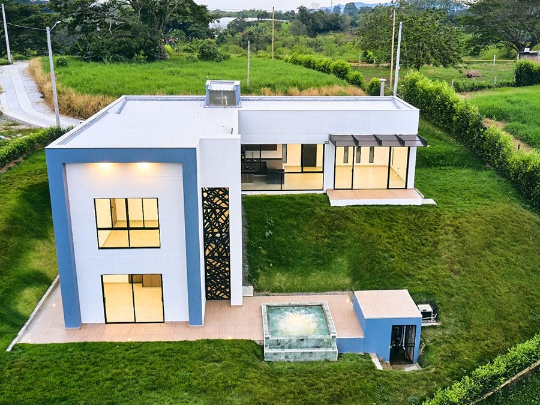
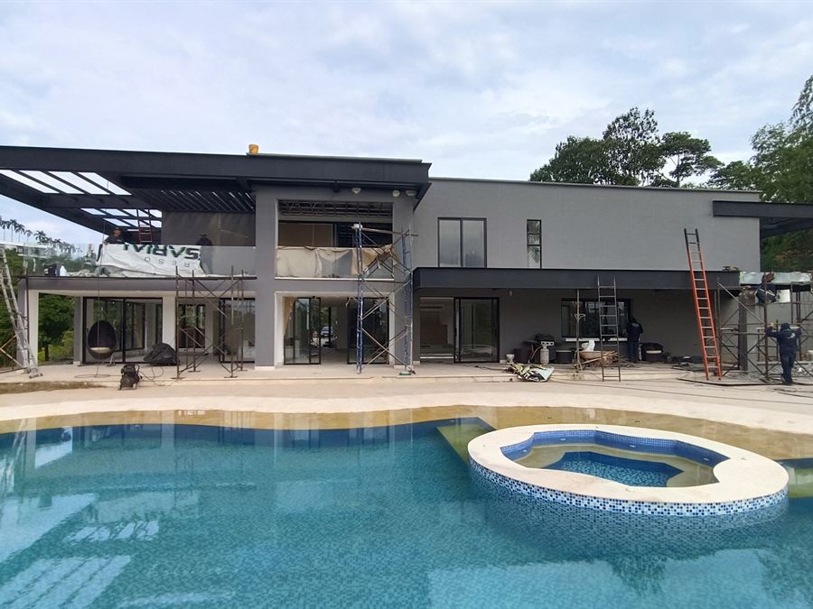
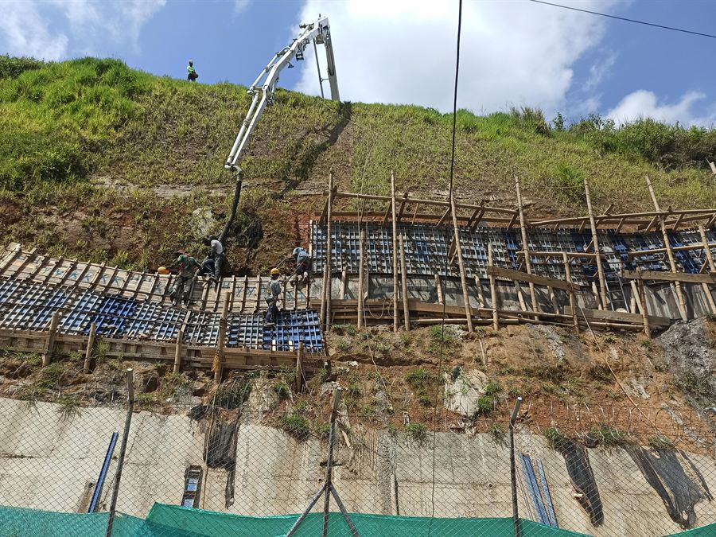
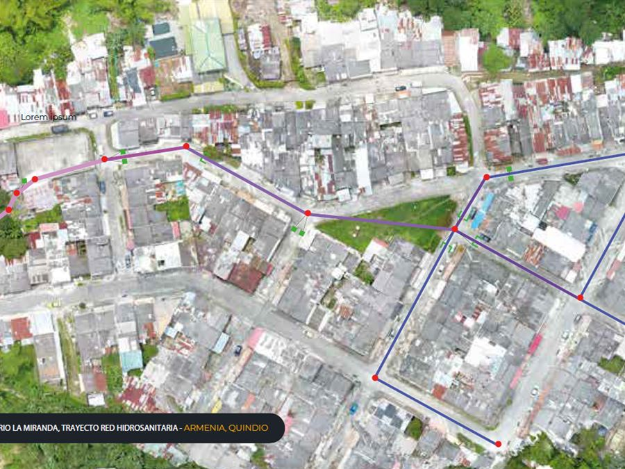
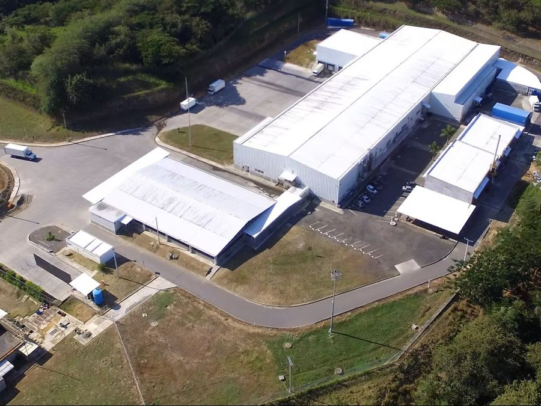
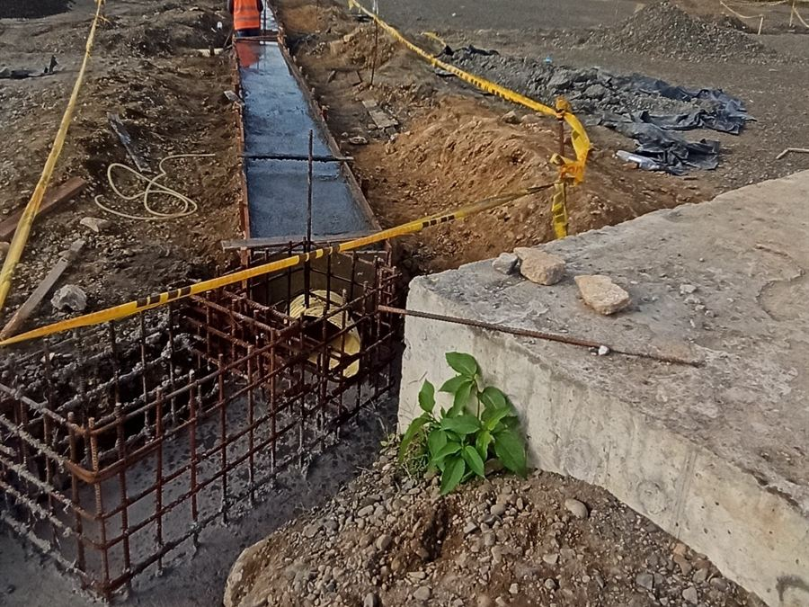
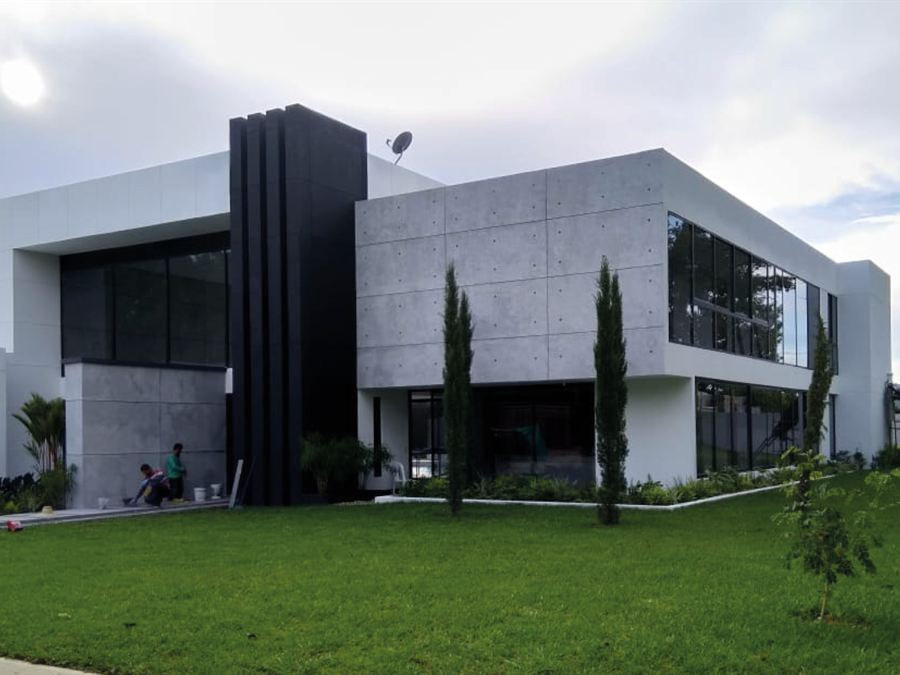
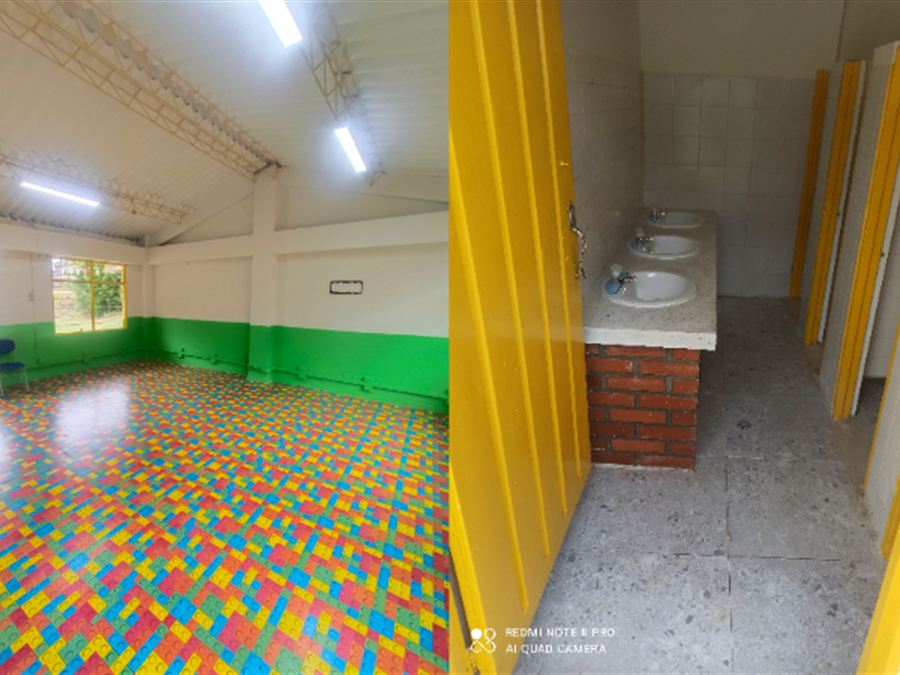
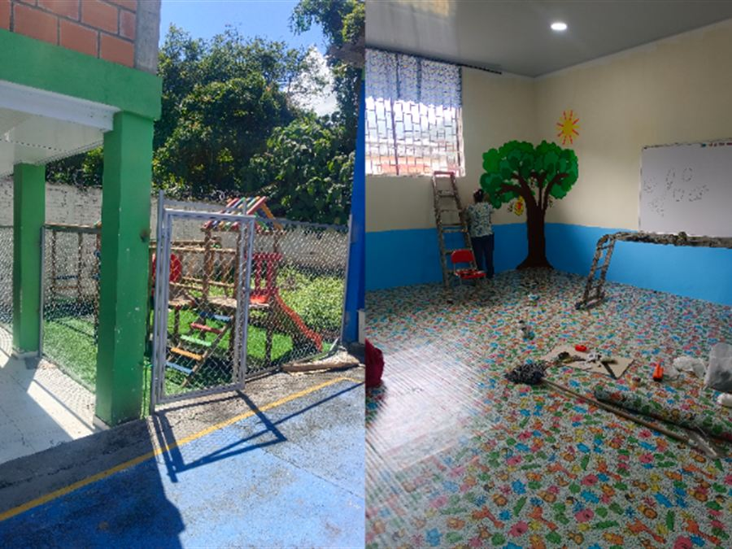
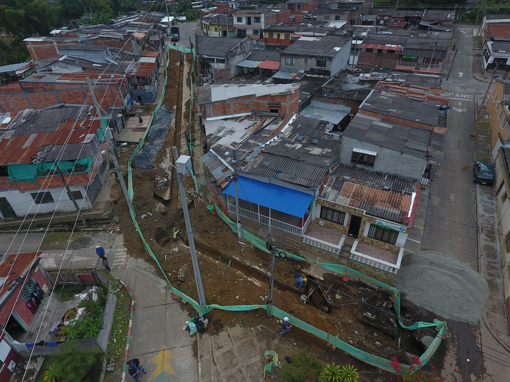

Construcción de obra civil
Edificaciones residenciales, comerciales e industriales: cimentación, estructura, mampostería, cubierta y acabados.
YU Construcciones S.A.S. ejecuta obra civil, infraestructura y remodelaciones con cronograma cumplido, presupuesto transparente y acabados profesionales. Sede en Armenia, Quindío; proyectos en todo el país.
Una sola empresa para todo el ciclo de la obra: estudio, presupuesto, ejecución y entrega. Atendemos proyectos residenciales, comerciales, industriales y de contratación pública.
Edificaciones residenciales, comerciales e industriales: cimentación, estructura, mampostería, cubierta y acabados.
Redes hidráulicas y sanitarias, colectores, pozos de inspección, sumideros y conexiones domiciliarias.
Muros de contención, pantallas ancladas, concreto lanzado, drenajes y control de erosión en terrenos de ladera.
Reformas integrales de vivienda, oficina y local comercial con acabados de alta gama y mínima interrupción.
Programas preventivos y correctivos para edificaciones, redes, cubiertas, fachadas y vías internas.
Placas, pórticos en concreto, estructura metálica y cubiertas bajo la norma sismo resistente NSR-10.
Vías internas, andenes, parqueaderos, muros, piscinas, jardinería y obras de urbanismo.
Diseño, análisis de precios unitarios (APU), programación de obra, interventoría y supervisión técnica.
Obra real, entregada y verificable. Toque cualquier proyecto para abrir la galería completa.

Vivienda 6Construcción integral de vivienda campestre de dos niveles: cimentación, estructura, cubierta, piscina y acabados arquitectónicos.

Vivienda 5Vivienda campestre de dos niveles con piscina, terrazas y estructura metálica de cubiertas y pérgolas.

Geotecnia 3Obras de contención, concreto lanzado y estabilización de taludes para protección de la infraestructura aeroportuaria.

Infraestructura 4Red de alcantarillado: excavación, instalación de tubería, pozos de inspección y reposición de estructura de vía.

Industrial 4Obra civil e industrial para planta de beneficio: estructura, cubierta, pisos técnicos y redes especializadas.

Infraestructura 3Construcción de redes de acueducto y alcantarillado en zona aeroportuaria, bajo protocolos de operación aérea.

Vivienda 3Vivienda unifamiliar en condominio: estructura en concreto, mampostería, redes y acabados interiores.

Institucional 2Adecuación y mejoramiento de infraestructura educativa: aulas, cubiertas y espacios comunes.

Institucional 2Mantenimiento y adecuación de planta física escolar, con intervención de fachadas y zonas de circulación.
Cinco etapas documentadas. Usted sabe siempre en qué va su obra, cuánto cuesta y cuándo se entrega.
Escuchamos su necesidad y visitamos el predio sin costo dentro del Quindío para levantar la información real.
Entregamos alcance, análisis de precios unitarios y cronograma por escrito, con cantidades y especificaciones.
Firma de contrato, pólizas cuando aplican, permisos, plan de seguridad industrial y logística de obra.
Obra con ingeniero residente, control de calidad de materiales e informes periódicos con registro fotográfico.
Entrega con paz y salvo, planos de lo construido, recomendaciones de mantenimiento y garantía sobre lo ejecutado.
Somos una empresa legalmente constituida, con respaldo técnico y experiencia comprobada en contratación pública y privada.
Habla directamente con el ingeniero responsable, no con un intermediario. Una sola persona responde por su proyecto.
Programación semanal con hitos verificables. Si algo cambia, usted se entera antes, no después.
Análisis de precios unitarios por escrito, con cantidades y especificaciones. Sin sobrecostos inventados.
Proveedores formales y materiales con ficha técnica. La durabilidad de la obra empieza por lo que se compra.
Personal afiliado a seguridad social, elementos de protección, SG-SST y pólizas cuando el contrato lo exige.
Vivienda, industria, infraestructura educativa, redes de acueducto y obras aeroportuarias en cuatro departamentos.
YU Construcciones S.A.S. es una empresa de ingeniería civil con sede en Armenia, Quindío. Nos especializamos en la construcción, el mantenimiento y la reparación de infraestructura en toda la región del Eje Cafetero.
Nuestro compromiso es entregar proyectos con los más altos estándares de calidad, seguridad y cumplimiento, tanto para clientes particulares como para entidades públicas. Cada obra se ejecuta con dirección técnica propia y control permanente en sitio.

Responda cinco datos y le preparamos el mensaje listo para enviar por WhatsApp. Con esa información el ingeniero puede darle una respuesta concreta el mismo día.
No pedimos datos de pago ni documentos. La cotización formal se entrega por escrito después de la visita técnica.
Nuestra sede está en el centro de Armenia. Atendemos todo el departamento del Quindío con visita técnica sin costo y ejecutamos proyectos en el Eje Cafetero, el Valle del Cauca y el resto del país.
Ejecutamos proyectos de obra civil e infraestructura en cualquier departamento del país, con equipo desplazado y coordinación remota para clientes que viven fuera de la región o en el exterior.
Si busca una constructora en Armenia, un contratista de obra civil en Calarcá o una empresa para remodelar su casa en Circasia, Montenegro o La Tebaida, atendemos todo el Quindío con el mismo equipo técnico y el mismo estándar de obra. También ejecutamos proyectos públicos y privados en Pereira, Dosquebradas, Manizales, Cartago y el norte del Valle del Cauca.
Atendemos por WhatsApp, teléfono o correo. Si prefiere, escríbanos por el formulario y le respondemos dentro de las siguientes 24 horas hábiles.
Cuéntenos qué necesita construir, remodelar o reparar. La primera asesoría no le cuesta nada.